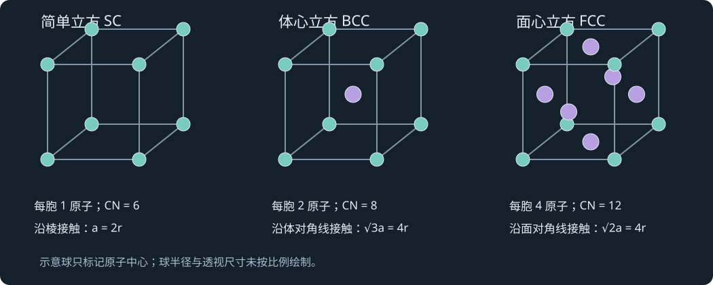
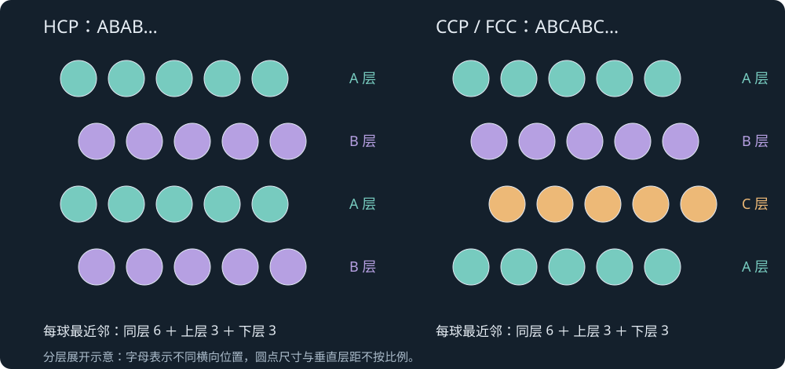

LESSON 07 · THE CRYSTALLINE SOLID STATE
晶态固体：堆积、结构、晶格能与能带
晶胞与 Bravais 点阵 · SC/BCC/FCC/HCP · 典型离子晶体 · 硅酸盐 · Born–Haber 与能带
7.1 · COURSE NOTES
晶态、非晶态与结构的描述层级
晶态固体的原子、离子或分子具有长程周期排列；非晶态缺少这种长程平移周期，却仍可有明确的近邻配位和短程有序。晶态 SiO2 与玻璃态 SiO2 都含局部 Si–O 连接，差别在于这些单元能否重复形成长程规则网络。快冷、复杂组分和结构重排受阻都可能促进玻璃形成。
描述晶体可分三层：点阵给出平移对称性，基元给出每个点阵点所附带的原子组，晶体结构由二者共同组成。晶胞（unit cell）是能够通过平移重复构造晶体的空间单元；原胞含一个点阵点，常规晶胞则为了体现对称性可含多个点阵点。因此，14 种 Bravais 点阵类型只分类平移点阵，实际晶体结构远多于 14 种。
课件用电子断层成像展示非晶固体中的三维原子排列，说明“没有周期”仍可研究局部结构。玻璃在玻璃化转变温度以下通常作为非晶固体描述；课件“实际上是缓慢流动的溶液”改为玻璃态表述。对应定义见 IUPAC glass。
来源：07 The Crystalline Solid State(1).pdf，PDF 第 1–4、28 页。
7.2 · COURSE NOTES
七晶系与十四种 Bravais 点阵
晶胞由 a、b、c 三条边及 α、β、γ 三个夹角描述。P 表示简单点阵，I 为体心，F 为面心，C 为底心，R 表示菱方点阵；有些几何组合可通过换轴或选取不同晶胞归并，所以独立类型共 14 种。
| 晶系 | 典型晶胞度量约束 | 点阵类型与数目 |
|---|---|---|
| 三斜 | 一般 a、b、c 和三个夹角均无额外限制 | P：1 |
| 单斜 | α=γ=90°，β 一般不为 90° | P、C：2 |
| 正交 | α=β=γ=90°，三边一般不等 | P、C、I、F：4 |
| 四方 | a=b，c 一般不同；三角均 90° | P、I：2 |
| 三方（菱方轴） | a=b=c，α=β=γ，一般不为 90° | R：1 |
| 六方 | a=b，c 一般不同；α=β=90°，γ=120° | P：1 |
| 立方 | a=b=c，α=β=γ=90° | P、I、F：3 |
分数坐标 (u,v,w) 表示位置 ua＋vb＋wc，其中 a、b、c 为晶胞基矢。坐标相差整数的点可由晶胞平移对应。例如 BCC 常规胞可用 (0,0,0) 与 12(1,1,1) 两个位置代表。HCP 则需要六方点阵加双原子基元；它本身是结构名称。点阵与基元的术语参见 IUCr 晶体学词典。
来源：07 The Crystalline Solid State(1).pdf，PDF 第 4、6、11 页。
7.3 · COURSE NOTES
共享原子的计数与配位数
立方晶胞的顶点由八个相邻晶胞共享，所以每个顶点贡献八分之一个原子；棱上原子由四胞共享，贡献四分之一；面上由两胞共享，贡献二分之一；完全在体内的原子贡献一个。计数时看原子中心的位置，不按图中球体露出的面积估算。
这个顶点共享规则针对通常的直角平行六面体晶胞。六方大棱柱顶点的共享权重应依实际邻胞数重新判断；对一套平行六面体原胞，所有顶点的总贡献仍为一个点阵点。配位数 CN 则数某个原子的最近邻，考察范围会跨越晶胞边界。晶胞含几个原子与一个原子有几个邻居，是两道不同的计数题。
来源：07 The Crystalline Solid State(1).pdf，PDF 第 5–7 页。
7.4 · COURSE NOTES
SC、BCC、FCC 的边长、配位数与堆积率
等大硬球模型中，原子堆积因子 APF 是胞内硬球总体积与晶胞体积之比。先确定接触发生在哪条线，再由接触长度求 a 与 r 的关系，最后代体积；不要默认所有立方结构都沿棱相切。
| 结构 | 胞内原子数与最近邻 | 接触条件 | APF |
|---|---|---|---|
| 简单立方 SC | 1；CN=6 | 棱：a=2r | π6≈0.5236 |
| 体心立方 BCC | 2；CN=8 | 体对角线：√3a=4r | √3π8≈0.6802 |
| 面心立方 FCC | 4；CN=12 | 面对角线：√2a=4r | π3√2≈0.7405 |
SC 中沿 ±x、±y、±z 六个方向各有一个最近邻。BCC 体心与八个顶点最近，顶点之间此时没有沿棱接触；a=4r√3≈2.309r。FCC 每个原子有 12 个最近邻，a=2√2r≈2.828r。课件约 74.1% 的写法在笔记中改用精确式及 74.05% 近似。
课件示例：α-Po 为简单立方；Cr、W、α-Fe 常见 BCC；Al、Cu、Au、Pb、Ni、Pt、Ag 常见 FCC。实际稳定结构同时取决于成键与热力学条件，堆积率提供的是几何信息。
来源：07 The Crystalline Solid State(1).pdf，PDF 第 7–10、13 页。

7.5 · COURSE NOTES
ABAB 与 ABCABC：HCP、CCP 及晶胞选择
一个密堆积层可看成三角形排列的 A 层。第二层放在 A 层的一组凹处，称 B 层；第三层若回到 A 位，就形成 ABAB… 的六方最密堆积 HCP；若放到另一组 C 位，就形成 ABCABC… 的立方最密堆积 CCP。CCP 与 FCC 是同一堆积结构的两种描述。
两种结构的每个球都有同层 6 个、上层 3 个、下层 3 个最近邻，所以 CN=12，理想 APF 相同。HCP 的层间距由正四面体几何得到 h=√(23)a，c 跨两个层间距，故：
可选两个原子的六方平行六面体胞，基元位置例如 (0,0,0) 与 (13,23,12)；轴的取向改变时等价坐标写法也会改变。教学常画的完整六方大棱柱体积为该胞三倍，含 6 个原子。两种选胞的密度和 APF 相同，课件“较小胞更密”应理解为选胞尺寸不同。Cd、Mg、Ti、Zn 为本讲 HCP 示例。
来源：07 The Crystalline Solid State(1).pdf，PDF 第 10–12 页。

7.6 · COURSE NOTES
理论密度与 Cr 的复算
M 是元素的摩尔质量，NA 是 Avogadro 常数；化合物中 Z 表示每胞化学式单元数。立方胞 V=a3；六方平行六面体胞 V=√3a2c2，应排为 √3a2c2。计算密度前将长度统一为 cm 或 m，并与摩尔质量单位配套。
Cr 的 BCC 胞中 Ncell=2，取 M=52.00 g·mol-1、r=0.125 nm，得 a≈0.288675 nm=2.88675×10-8 cm，V≈2.4056×10-23 cm3，计算 ρ≈7.18 g·cm-3，与课件实验值约 7.19 g·cm-3 接近。
金属形变与非定向成键、滑移和位错运动有关；加工硬化主要联系位错增殖及相互阻碍。杂质、析出物和热处理也会改变位错运动，课件“杂质使滑移容易”“锤击把杂质聚在一起”的简写改为上述机制。晶体结构与延展性的联系还需结合温度、滑移系及组织判断。
来源：07 The Crystalline Solid State(1).pdf，PDF 第 13–14 页。
7.7 · COURSE NOTES
四面体与八面体空隙：数量和尺寸
在 HCP 或 CCP 中，N 个堆积球提供 2N 个四面体空隙和 N 个八面体空隙。FCC 常规胞含 4 个堆积球，因而有 8 个四面体位、4 个八面体位。八面体位可由体心 1 个加 12 条棱各四分之一得到；四面体位在三个坐标分别取四分之一或四分之三的位置。
四面体空隙由 4 个球围成；外球半径 R，正四面体边长 2R，顶点到中心距离为 √6R2，因此小球临界半径 r=(√(32)−1)R≈0.225R。八面体空隙的中心到顶点距离为 √2R，故 r=(√2−1)R≈0.414R。
SC 中心的八配位立方空隙满足 r=(√3−1)R≈0.732R。这里半径比是外球保持相切时，小球恰好接触所有邻球的几何界限；实际离子半径与配位环境、极化及共价成键有关。
来源：07 The Crystalline Solid State(1).pdf，PDF 第 7、15、27 页。
7.8 · COURSE NOTES
由空隙占据推化学计量与结构
若阴离子 X 作密堆积，全部八面体位填 M，位点数比为 M:X=1:1；全部四面体位填 M，则为 2:1；填一半四面体位则为 1:1。由此先判化学计量，再结合占位有序性与成键判断结构。
| 结构 | 点阵/占位描述 | 局部 CN | 常规胞 Z |
|---|---|---|---|
| NaCl 岩盐 | Cl 的 FCC，加全部八面体位 Na | Na 6；Cl 6 | 4 |
| CsCl | 简单立方点阵加两种离子的双原子基元 | Cs 8；Cl 8 | 1 |
| 闪锌矿 ZnS | S 的 FCC，填一半四面体位 Zn | Zn 4；S 4 | 4 |
| 纤维锌矿 ZnS | S 的 HCP，填一半四面体位 Zn | Zn 4；S 4 | 六方胞 2 |
| 萤石 CaF2 | Ca 的 FCC，全部四面体位填 F | Ca 8；F 4 | 4 |
| 反萤石 Na2O | O 的 FCC，全部四面体位填 Na | Na 4；O 8 | 4 |
| 金红石 TiO2 | 四方胞，TiO6 八面体以共边/共顶连接 | Ti 6；O 3 | 2 |
NaCl 可视为两个相互穿插的 FCC 子晶格，最近异号离子距离为 a2，即 a2。CsCl 的异号最近邻沿体对角线，距离 √3a2，即 √3a2；因顶点与体心是不同物种，不能把整个结构归为单原子 BCC 点阵。两者的晶胞化学计量都由实际共享计数得到。
课件晶胞参数表以 Å 为单位：NaCl 约 5.63 Å，MgO 4.20 Å，KCl 6.29 Å；CsCl 约 4.11 Å。这些示例用于说明同型结构可有不同尺寸。高压下 Na–Cl 体系出现其他化学计量的课件拓展，说明常压经验有适用条件。
来源：07 The Crystalline Solid State(1).pdf，PDF 第 16–23 页。
7.9 · COURSE NOTES
金刚石与两种 ZnS：同一局部配位的不同长程序列
金刚石由 FCC 点阵加两个 C 原子基元构成，第二个基元相对位移为 (14,14,14)，常规立方胞共 8 个 C，CN=4。每个 C 形成定向四面体共价键；相邻距离 d=√3a4，排为 √3a4。Si、Ge、α-Sn 有相近结构类型。
闪锌矿把金刚石中交替的两套位置分别换成 Zn、S，局部仍是四面体。纤维锌矿的局部配位也为四面体，但对应的密堆积层序为六方。仅凭 CN=4 不能分辨两者；应继续查看堆垛与长程对称性。最近邻计数还可用键数守恒核对：nZn×CNZn=nS×CNS。
来源：07 The Crystalline Solid State(1).pdf，PDF 第 16、20–21 页。
7.10 · COURSE NOTES
多原子离子、钙钛矿与缺陷补偿
替换晶体中的阳离子或阴离子可保留总体结构类型；尺寸变化会引起伸缩和畸变，价态变化则需其他替换或空位等方式维持电中性。含非球形多原子离子的晶体，不能只按单一硬球模型解释。
CaCO3 的方解石与文石是同质多晶：化学组成相同、晶体结构不同。方解石中 Ca 对 O 的 CN 为 6，文石为 9；方解石属三方晶系，常用六方轴表示，文石属正交晶系。课件“hexagonal”一词在这里区分为轴的表示法。
理想立方钙钛矿 ABO3 中 A 位在顶点、B 位在体心、O 在面心，计数为 A1B1O3；B 被 6 个 O 围成八面体，A 通常处于 12 配位的较大空隙。CaTiO3 为结构原型，真实晶体可因八面体倾转而畸变。卤化物钙钛矿 CH3NH3PbX3（X=Cl、Br、I）以 PbX6 网络和分子阳离子为例，尺寸、畸变和组分影响其光电性质。课件的大尺寸晶体生长与辐射探测应用作为结构—性能联系的拓展。
来源：07 The Crystalline Solid State(1).pdf，PDF 第 24–26 页。
7.11 · COURSE NOTES
半径比规则及课件数字核对
| 理想半径比区间 | 常见配位 | 临界几何 |
|---|---|---|
| r+r-约 0.225–0.414 | 4，四面体 | √(32)−1 |
| 约 0.414–0.732 | 6，八面体 | √2−1 |
| 约 0.732–1 | 8，立方体 | √3−1 |
这些区间是硬球几何的粗略预测，离子半径本身还会随配位数改变。课件 NaCl 示例中 113 与 167 的比为约 0.677，原写 0.667 有算术误差；116 与 167 的比约 0.695。ZnS 示例的 74 与 170 比约 0.435，若机械套区间会偏向六配位，而实际为四配位。这正好展示成键和半径选择对判断的影响。
空隙能否容纳一个球是几何问题；哪种真实结构的自由能最低，还包括极化、方向性、晶格能及环境条件。做题宜将半径比作为候选结构的筛选依据，再用实际计量、配位与已知结构检查。
来源：07 The Crystalline Solid State(1).pdf，PDF 第 27 页。
7.12 · COURSE NOTES
SiO4 的共享氧计数与硅酸盐分类
硅酸盐以 SiO4 四面体为基本局部单元，主要通过共顶点氧形成更大骨架。每个氧若只属于一个四面体，计入一个；若被相邻两个四面体共享，对每个 Si 只贡献二分之一。设每个四面体平均共享 q 个顶点，则每 Si 的氧数为 4−q2，排为 4−q2。
| 结构维度 | 氧共享情况 | 典型组成单元 |
|---|---|---|
| 独立四面体 | q=0 | [SiO4]4- |
| 双四面体 | 每四面体共享 1 个顶点 | [Si2O7]6- |
| 单链、环 | q=2 | (SiO3)ₙ2ⁿ- |
| 双链 | 平均 q=2.5 | [Si4O11]6- |
| 层状 | q=3 | [Si2O5]2- |
| 三维网络 | q=4 | SiO2 |
以阳离子补偿硅氧骨架负电荷，可形成不同矿物；Al3+ 替换 Si4+ 时每替换一次增加一个单位负电，需要额外阳离子补偿。石英、鳞石英（tridymite）、方石英（cristobalite）为课件列出的 SiO2 多晶型，Si–O–Si 角随结构改变，课件 143.6° 作为具体结构近似，不作为所有晶型常数。
来源：07 The Crystalline Solid State(1).pdf，PDF 第 28–30 页。
7.13 · COURSE NOTES
层状硅酸盐、沸石与结构导向生长
高岭石的正确式为 Al2Si2O5(OH)4；课件写成 Al2Si4O10(OH)2 的组成对应叶蜡石。滑石为 Mg3Si4O10(OH)2，可与叶蜡石比较八面体层的占位和电荷平衡。对应化学式核对见 CSIRO 高岭石与 叶蜡石记录。
云母的硅铝氧层之间含 K+ 等离子，层间连接特点使其易沿层解理成平整薄片。温石棉 Mg3Si2O5(OH)4 的相关层在几何尺寸上不匹配，可卷曲形成纤维状结构。这里从结构解释形态，不将所有纤维状矿物归成同一化合物。
沸石是有孔道的铝硅酸盐框架，骨架负电由可交换阳离子补偿。孔径、拓扑与阳离子使其具有离子交换、吸附、选择性进入孔道及催化性质；分子筛除水是本讲重要应用。课件另以 Putnisite 展示新组成/新结构的矿物分类，以化学花园和碳酸盐—二氧化硅微结构说明 pH、温度、CO2 等条件可影响沉淀及层级形貌。
来源：07 The Crystalline Solid State(1).pdf，PDF 第 28、30–33 页。
7.14 · COURSE NOTES
Born–Haber 循环：先规定符号，再做 Hess 加和
对 MX(s)，从标准态单质生成晶体可拆为金属升华或原子化、非金属键解离、金属电离、非金属得电子、气相离子形成晶体。Hess 定律要求各步骤焓变之和等于标准生成焓。定义晶格形成焓 ΔHlatt,form 为气相离子结合成固体，通常为负；反向拆成气相离子的晶格解离焓为正。
这里 ΔHattach 直接采用电子附着过程 X(g)+e-→X-(g) 的带符号焓变，放热时为负；若表中 EA 以“放出的能量”为正，则对应项写 −EA。电离需要能量，升华和解离一般也为正。画循环后逐行检查原子、离子电荷与电子数，比只背一个正负号更可靠。
课件第 34 页 LiF 示例列 161、79、531、−328、−1239 kJ·mol-1，相加为 −796，而同页写生成焓 −769，数值未闭合。实际 LiF(s) 标准生成焓在 NIST 所列为 −616.93 kJ·mol-1，因此该整组数据应重新核对。笔记保留循环方法，并把这组数值作为查错练习，而不直接用来背诵 LiF 的物性。
来源：07 The Crystalline Solid State(1).pdf，PDF 第 34 页。
7.15 · COURSE NOTES
Madelung 常数与 Born–Mayer 排斥修正
一对离子的静电能随电荷乘积成正比、随距离成反比。晶体中还存在许多远邻的异号吸引与同号排斥，Madelung 常数把整个点阵的几何求和纳入。用 z+、z- 表示正的电荷数绝对值，则一摩尔离子晶体的吸引项写为：
M 为正的几何常数，r0 是最近异号离子距离，ρrep 是排斥势的长度尺度，课件采用约 30 pm；此处用下标区分它与质量密度 ρ。Born–Mayer 从指数型短程排斥出发，在平衡距离写出此形式。所得静态晶格能与有限温度的晶格焓概念相近但有热力学校正。
| 结构 | 课件 M | 最近邻配位 |
|---|---|---|
| NaCl | 1.74756 | 6:6 |
| CsCl | 1.76267 | 8:8 |
| 闪锌矿 ZnS | 1.63805 | 4:4 |
| 纤维锌矿 ZnS | 1.64132 | 4:4 |
| CaF2 | 2.51939 | 8:4 |
| TiO2 金红石 | 2.3850 | 6:3 |
同一结构与相近 r0 下，提高离子电荷通常使结合更强。跨不同计量结构比较时要保持公式与 M 的定义一致。NaCl 中 r0=a2，远邻包括 12 个同号离子等；只数 6 个最近异号邻居会漏掉长程相互作用。
来源：07 The Crystalline Solid State(1).pdf，PDF 第 35–37 页。
7.16 · COURSE NOTES
从晶格解离到水合：溶解焓与 HSAB
溶解焓可拆为正的晶格解离焓与两个离子的水合焓之和。课件 AgCl 的算例给 917−475−369=+73 kJ·mol-1，说明晶格破坏与水合放热竞争。是否自发和达到多少溶解度由 ΔG=ΔH−TΔS 及活度平衡决定。
| 盐 | 晶格形成焓 | 阳、阴离子水合焓之和 | 计算溶解焓 |
|---|---|---|---|
| LiF | −1025 | −519−506 | 0 |
| LiI | −745 | −519−293 | −67 |
| CsF | −724 | −276−506 | −58 |
| CsI | −590 | −276−293 | +21 |
本表为课件第 38 页的一组给定近似值，单位均为 kJ·mol-1，水合一栏原题标成 hydrolyzation，此处按气相离子进入水相的“水合焓”翻译。由这些晶格形成焓算 LiI(s)+CsF(s)→CsI(s)+LiF(s)，ΔH=−146 kJ·mol-1，体现硬软匹配和尺寸对点阵的影响。实际溶解度排序还要计入熵和溶剂化平衡。
来源：07 The Crystalline Solid State(1).pdf，PDF 第 37–38 页。
7.17 · COURSE NOTES
从 n 个分子轨道到能带与量子点
n 个相同类型原子轨道组合产生 n 个分子轨道。当固体中 n 极大时，能级非常密集，形成近似连续的能带。占据情况与费米能附近是否有可用态，决定材料的导电行为；金属具有部分填充或重叠的能带，半导体和绝缘体则有价带、导带及其间带隙。
有机共轭体系随连接单元数增加也会改变轨道分裂与能隙，课件以并苯系列作为分子到扩展结构的桥梁。量子点尺寸缩小到相关激子尺度时，载流子受量子限域，能级间隔和光学跃迁随尺寸变化；“小于 10 nm”是本讲的常见尺度示例，具体限域尺度依材料而定。
电子被激发到导带，在价带留下空穴；电子—空穴束缚态称激子（exciton），其能量相对自由电子—空穴连续态降低一个束缚能。辐射复合产生发光。常见同材料量子点越小，限域越强、发光波长越短；尺寸调控因而可用于显示、光电转换和生物探针等课件应用。
来源：07 The Crystalline Solid State(1).pdf，PDF 第 39–41 页。
7.18 · COURSE NOTES
公式速查、常见辨析与作业
术语：crystal lattice 点阵；basis 基元；unit cell 晶胞；coordination number 配位数；atomic packing factor 原子堆积因子；tetrahedral/octahedral hole 四面体/八面体空隙；polymorph 同质多晶型；lattice enthalpy 晶格焓；Madelung constant 马德隆常数；band gap 带隙；quantum confinement 量子限域。
解题主线：① 按共享权重计数；② 找最近邻接触线；③ 由 a、r 求体积与 APF；④ 区分原子数 Ncell 和化学式单元数 Z；⑤ 用占位比例与配位键计数检查计量；⑥ 晶格能先明确正负约定，再将升华、电离、电子附着及水合过程逐项加和。
推荐自算：推导 SC、BCC、FCC 的 APF；证明理想 HCP 的 ca 比和两种选胞密度相同；推导两类密堆积空隙的半径；用 NaCl 的 a≈5.63 Å 与 Z=4 算密度约 2.18 g·cm-3；检查 LiF 课件焓数据能否闭合。
课件布置第 7 章作业：7.1、7.5、7.6、7.8、7.9、7.15、7.18；标注截止为 2026 年 11 月 27 日（周五）。本页记录课件原安排，具体提交要求按课程通知执行。
来源：07 The Crystalline Solid State(1).pdf，PDF 第 41；全章复习 页。